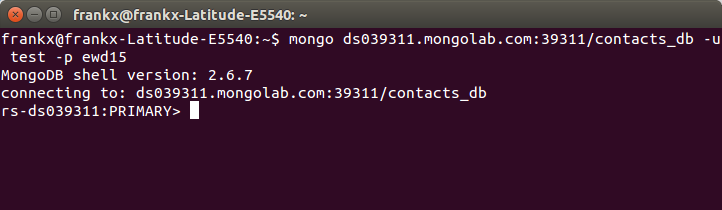
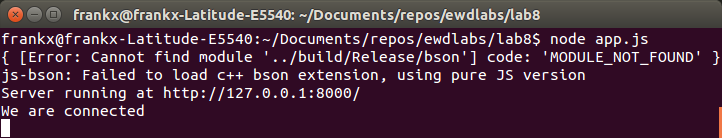
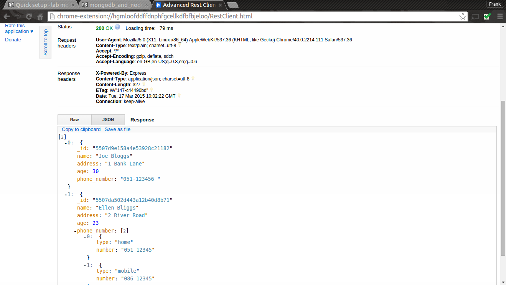

MongoDB is a store for JSON documents, and allows these documents to be queried and manipulated, using JSON itself as the query language.
MongoDB is a noSQL database, which means that it does not use traditional SQL and tables with rows and columns. Instead, it is a store for JSON documents, and allows these documents to be queried and manipulated, using JSON itself as the query language.
Running your own MongoDB cluster requires a significant amount of system administration work. You can outsource this to the cloud by using a MongoDB hosting provider. The provider MongoLAB offers free test databases that you can use to complete this practical.
MongoLab is a fully managed MongoDB-as-a-Service. It supports many of the features you expect including scalability, data protection, performance and availabilty. It also has a free sandbox feature that you can take advantage of to develop your application.
mongo –version.To connect to your new cloud database, use the connection string indicated in MongoLAB for connection using the shell. copy it into a terminal/command line as shown below: 
The MongoDB command line as a Javascript console. Try the following to illustrate this:
> var foo = 1+2
> foo
3
db.contacts.insert({ name: "Joe Bloggs", address: "1 Bank Lane", age: 21, phone_number: "051-123456 "}) db.contacts.find() { "_id" : ObjectId("55076970a67574f02cf6a6e9"), "name" : "Joe Bloggs","age": 21, "address" : "1 Bank Lane", "phone_number" : "051-123456 " }
` The db object is provided by MongoDB and represents the current database in use. You can implicitly reference properties on the db object – for examples: db.contacts This creates a “collection”, which is like a traditional SQL table. Thusdb.contactsreferences a collection object, which has its own methods, one of which is “insert”. To insert a document into the collection, just provide a JavaScript object literal. The document can be as complex as you like, and can contain sub objects and arrays. Thefind()`` method, when used without arguments, returns a list of all documents in the collection. MongoDB automatically creates a unique identifier for each document – the ObjectID, with property _id. Go back to the mongolab website and click on the collections option to see the new contacts collection.
> db.contacts.insert({ name: "Ellen Bliggs", address: "2 River Road", age:23, phone_number: [{type: "home", number: "051 12345"},{type: "mobile", number: "086 12345"}], email: "ebliggs@wit.ie"})
> db.contacts.find()
{ "_id" : ObjectId("5507d9e158a4e53928c21182"), "name" : "Joe Bloggs", "address" : "1 Bank Lane", "age" : 21, "phone_number" : "051-123456 " }
{ "_id" : ObjectId("5507da502d443a12b40d8b71"), "name" : "Ellen Bliggs", "address" : "2 River Road", "age" : 23, "phone_number" : [ { "type" : "home", "number" : "051 12345" }, { "type" : "mobile", "number" : "086 12345" } ], "email" : "ebliggs@wit.ie" }
Unlike traditional databases, MongoDB does not require a schema – you are not required to define your data structures in advance. You can insert any document into any collection.
MongoDB offers an easy query language. Of course, joins are not possible! Instead you “denormalize” by replicating data where needed.
> db.contacts.find({name:'Joe Bloggs'})
{ "_id" : ObjectId("55076970a67574f02cf6a6e9"), "name" : "Joe Bloggs","age":23, "address" : "1 Bank Lane", "phone_number" : "051-123456 " }
$conditionName:{criteria...}syntax. For example, to find numeric values greater than 10, use: fieldName:{$gt:10}> db.contacts.find({age:{$gt:21}})
{ "_id" : ObjectId("5507da502d443a12b40d8b71"), "name" : "Ellen Bliggs", "address" : "2 River Road", "age" : 23, "phone_number" : [ { "type" : "home", "number" : "051 12345" }, { "type" : "mobile", "number" : "086 12345" } ], "email" : "ebliggs@wit.ie" }
> db.contacts.find({age:{$lt:22}})
{ "_id" : ObjectId("5507d9e158a4e53928c21182"), "name" : "Joe Bloggs", "address" : "1 Bank Lane", "age" : 21, "phone_number" : "051-123456 " }
The condition names are as follows: $gt = greater than, $gte = greater than or equal to, $lt = less than, $lte = less than or equal to,etc.
See here for more comprehensive instructions for querying.
> db.contacts.find({}).sort({name:1})
{ "_id" : ObjectId("5507da502d443a12b40d8b71"), "name" : "Ellen Bliggs", "address" : "2 River Road", "age" : 23, "phone_number" : [ { "type" : "home", "number" : "051 12345" }, { "type" : "mobile", "number" : "086 12345" } ], "email" : "ebliggs@wit.ie" }
{ "_id" : ObjectId("5507d9e158a4e53928c21182"), "name" : "Joe Bloggs", "address" : "1 Bank Lane", "age" : 21, "phone_number" : "051-123456 " }
> db.contacts.find({}).sort({name:-1})
{ "_id" : ObjectId("5507d9e158a4e53928c21182"), "name" : "Joe Bloggs", "address" : "1 Bank Lane", "age" : 21, "phone_number" : "051-123456 " }
{ "_id" : ObjectId("5507da502d443a12b40d8b71"), "name" : "Ellen Bliggs", "address" : "2 River Road", "age" : 23, "phone_number" : [ { "type" : "home", "number" : "051 12345" }, { "type" : "mobile", "number" : "086 12345" } ], "email" : "ebliggs@wit.ie" }
If you have too many results, you can limit the number of results using the limit() function:
> db.contacts.find({}).sort({name:1}).limit(1)
{ "_id" : ObjectId("5507da502d443a12b40d8b71"), "name" : "Ellen Bliggs", "address" : "2 River Road", "age" : 23, "phone_number" : [ { "type" : "home", "number" : "051 12345" }, { "type" : "mobile", "number" : "086 12345" } ], "email" : "ebliggs@wit.ie" }
To return a subset of the document properties, use a second argument to the find function:
> db.contacts.find({}, {name:1})
{ "_id" : ObjectId("5507d9e158a4e53928c21182"), "name" : "Joe Bloggs" }
{ "_id" : ObjectId("5507da502d443a12b40d8b71"), "name" : "Ellen Bliggs" }
Because MongoDB does not provide traditional database ACID semantics, updates need more care than other database interactions. MongoDB does provide a set of “atomic” operations, in that these operations are guaranteed to complete before matching documents are modified by other updates. These can be used to provide certain forms of data integrity. 1. Update operations consist of a query object and then an update object, providing the new data. The following updates the entire record for Joe Bloggs:
> db.contacts.update({name:"Joe Bloggs"},{ name: "Joe Bloggs", address: "1 Bank Lane", age: 27, phone_number: "051-123456 "})
WriteResult({ "nMatched" : 1, "nUpserted" : 0, "nModified" : 1 })
To update only specific properties, use $set and $unset
> db.contacts.update({name:"Joe Bloggs"},{$set:{age: 30} })
WriteResult({ "nMatched" : 1, "nUpserted" : 0, "nModified" : 1 })
rs-ds039311:PRIMARY> db.contacts.find({name:"Joe Bloggs"})
{ "_id" : ObjectId("5507d9e158a4e53928c21182"), "name" : "Joe Bloggs", "address" : "1 Bank Lane", "age" : 30, "phone_number" : "051-123456 " }
You can also perform “upsert” operations. In this case, a new document is created if no documents match the query. This is useful for intialising and updating counters using the $inc operator, which increments properties atomically:
> db.counter.update({name:'one'},{$inc:{count:1}},true)
> db.counter.find()
{ "_id" : ObjectId("4f3a4f9cc801a4b87bee6a12"), "count" : 1, "name" : "one" }
> db.counter.update({name:'one'},{$inc:{count:1}},true)
> db.counter.find()
{ "_id" : ObjectId("4f3a4f9cc801a4b87bee6a12"), "count" : 2, "name" : "one" }
An upsert is performed if the third argument to update is true:
db.counter.update({name:'one'},{$inc:{count:1}},true)
Remove operations are similar to find and update in that the first argument is a pattern object to match against. All matching documents are removed. 1. Remove an object from the contacts collection
> db.contacts.remove({name:"Joe Bloggs"})
or
> db.contacts.remove({_id:ObjectId("4f3a4983199668116a823447")})
In the second script, the object is removed using its _id unique identifier. In general, MongoDB operations are most efficient if the query used the _id value to specify the object.
This section requires that you have the web service from lab 7 completed. We now want to increase the functionality of the API and add integration to Mongo DB.
Create a new folder called lab8 and copy the contents from the lab7 folder that you completed last week. Make sure it works to spec. by testing the app with a Rest client.
To add connection capability to Mongo, we need the MongoDB package. Install this package by running npm install mongodb --save in the Lab8 folde . The save ensures that the package.json file is updated to incude this dependency.
You can get plenty of information about mongodb module at http://mongodb.github.io/node-mongodb-native/. We will reuse the contacts collection from the last section. Make sure you have some data to work with in this collection.
Last week you were using an in memory collection. We will keep the same API and update the index.js file to create a connection to the MongoLab db from your API code.
// Get list of contacts
exports.index = function(req, res) {
} ;
// Creates a new contact in datastore.
exports.create = function(req, res) {
};
// Update an existing contact in datastore.
exports.update = function(req, res) {
};
// delete an existing contact in datastore.
exports.delete = function(req, res) {
};
var mongo = require('mongodb');
var BSON = mongo.BSONPure;
// get mongo client
var mongoClient = mongo.MongoClient;
var mongoDb;
mongoClient.connect("mongodb://test:ewd15@<YOUR_DOMAIN>.mongolab.com:39311/contacts_db", function(err, db) {
if(!err) {
console.log("We are connected");
mongoDb = db;
}
else
{
console.log("Unable to connect to the db");
}
});
This code uses the MongoDB module to create a connection to your database. We will also use the BSON object, binary-encoded serialization of JSON-like documents, to encode, decode the Mongo ID.
For this to work, You will need to update this script so that it connects to your Mongo DB. To do this, get the connection information from MongoLab. See here for more info.
- Now run the service to check if the connection is working. You should see the following in the terminal, command line:

We need to provide the data access logic for each route, modify index.js index function to use the data contained in the Mongo database. Place the following code in the index function:
// Connect to the db
if (mongoDb){
var collection = mongoDb.collection('contacts');
collection.find().toArray(function(err, items) {
res.send(items);
});
}
else
{
console.log('No database object!');
}
This code checks the mongoDb exists and, if so, executes a find() query. We chain the toArray() function after the find() to covert the resonse to an array. This is then returned in the response (i.e. res.send(items)
Test with your Rest client by running a HTTP GET request. You should see something similar to the following in the response:

Modify the create function to create data contained in the Mongo database. Place the following code in the create function:
var contact = req.body;
console.log('Adding contact: ' + JSON.stringify(contact));
if (mongoDb){
var collection = mongoDb.collection('contacts');
collection.insert(contact, {w:1}, function(err, result) {
if (err) {
res.send({'error':'An error has occurred'});
} else {
console.log('Success: ' + JSON.stringify(result[0]));
res.send(result[0]);
}
});
}
else
{
console.log('No database object!');
}
Test that the create contact works by posting the following contact JSON document to the service using a HTTP POST in the Rest Client:
{"name":"Bob Hope","address":"2 Bob Road", "age":55, "phone_number": [{"type":"home","number":"051 12345"}, {"type":"mobile","number":"086 12345"}], "email":"bhope@wit.ie"}
All going well, you should see a new contact record in your database. Check this by running a HTTP GET request.
var id = req.params.id;
var contact = req.body;
console.log('Updating contact: ' + id);
console.log(JSON.stringify(contact));
var collection = mongoDb.collection('contacts');
collection.update({'_id':new BSON.ObjectID(id)}, contact, {safe:true}, function(err, result) {
if (err) {
console.log('Error updating contact: ' + err);
res.send({'error':'An error has occurred'});
} else {
console.log('' + result + ' document(s) updated');
res.send(contact);
}
});
Test this works as before by updating the last contact(Bob Hope) you entered to the following:
{"name":"Bob Hope","address":"22 Bob Road","age":55,"phone_number":[{"type":"home","number":"051 12345"},{"type":"mobile","number":"086 12345"}],"email":"bhope@wit.ie"}
var id = req.params.id;
console.log('Deleting contact: ' + id);
var collection = mongoDb.collection('contact');
collection.remove({'_id':new BSON.ObjectID(id)}, {safe:true}, function(err, result) {
if (err) {
res.send({'error':'An error has occurred - ' + err});
} else {
console.log('' + result + ' document(s) deleted');
res.send(req.body);
}
});
Again, check this works using the Rest client.
Enhance the API functions to provide the following: - Get a contacts details.